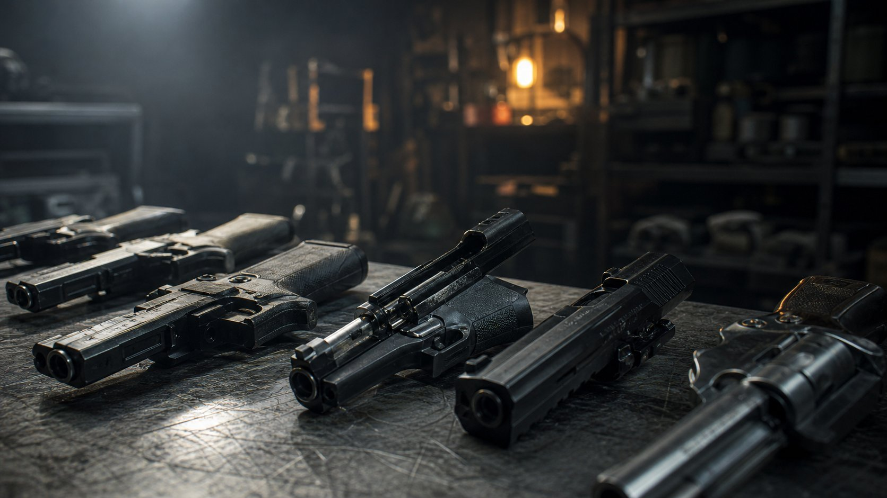

1. Rôle réel des pistolets en ABI
Dans Arena Breakout Infinite, les pistolets sont des outils de finition et de rat-raids, pas des armes principales. Ils servent à :
- Rat kits rentables : un TT-33/Makarov en main = un kit sous 20 000 K, extraction potentielle intacte.
- Finitions à couverture : finir un ennemi au contact quand l'arme principale est vide.
- Menaces silencieuses : surprendre un tiers-parti sans provoquer un regroupement.
- Training débutant : apprendre la mécanique balistique à moindre coût.
2. Les modèles rencontrés sur Kamona
| Pistolet | Calibre | Rôle |
|---|---|---|
| Makarov PM | 9×18mm | Rat kit ultime — quasi gratuit, silencieux, fiable |
| TT-33 | 7.62×25mm | Meilleure pénétration des pistolets, semi-auto à longue portée utile |
| APB / variantes auto | 9mm | Rafale automatique en urgence — l'arme « juste au cas où » |
Les chiffres précis évoluent à chaque patch : vérifiez toujours l'armurerie en jeu. Chez ABI NEXUS, pas de stats inventées — seule la pratique confirme.
3. Les pistolets en chiffres (statistiques officielles)
Les valeurs ci-dessous sont reprises telles quelles du wiki officiel d'Arena Breakout Infinite (fiches armes et modèle de données WeaponData). Ce sont des caractéristiques de l'arme, pas des avis : elles décrivent la matière première, pas la qualité d'un build. L'échelle est la même pour toutes les armes du jeu, donc les valeurs sont comparables entre elles, mais elle ne dit rien du prix, de la disponibilité ni de la rentabilité en raid.
| Pistolet | Calibre | Mode de tir | Puissance | Recul vertical | Recul horizontal | Ergonomie | Précision | Portée efficace | Cadence (RPM) | Poids |
|---|---|---|---|---|---|---|---|---|---|---|
| M45A1 | .45 | Semi | Mid-High | 58 | 28 | 84 | 15 | 12 | 250 | 2,25 |
| F57 | 5.7×28mm | Semi | Mid-High | 60 | 25 | 83 | 22 | 20 | 400 | 2,49 |
| M1911 | .45 | Semi | Mid-High | 54 | 26 | 77 | 14 | 16 | 350 | 2,50 |
| G18C | 9×19mm | Semi, Full | Low | 57 | 24 | 73 | 16 | 12 | 1000 | 1,31 |
| G17 | 9×19mm | Semi | Low | 56 | 23 | 73 | 15 | 14 | 400 | 1,16 |
| T05 | 9×19mm | Semi | Low | 41 | 22 | 77 | 11 | 14 | 300 | 1,62 |
| Desert Eagle | .44 | Semi | Medium | 40 | 24 | 65 | 30 | 31 | 300 | 1,81 |
Lecture : recul se compte vers le haut (valeur haute = plus de recul), précision et portée efficace sont exprimées sur l'échelle interne du jeu, cadence en tours par minute. Source : wiki officiel ABI, modèle de données WeaponData. Ces chiffres sont ceux du wiki et peuvent evolved à chaque patch : l'armurerie en jeu reste la référence.
Ce que le tableau dit — et ce qu'il ne dit pas
- Il dit que le M45A1 offre la meilleure ergonomie de la catégorie (84) et le Desert Eagle la meilleure précision (30) et la meilleure portée effective (31) — mais aussi le moins bon recul vertical (40).
- Il ne dit pas le prix en GPA, la disponibilité en raid, le poids de l'ensemble de l'armure, ni la facilité à trouver les munitions correspondantes. Un pistolet à 8 000 GPA et introuvable ne vaut pas mieux qu'un G17 à 2 000 GPA présent dans chaque raid.
- Il ne dit pas qu'une arme est « bonne » : l'arme la mieux notée du tableau est celle qui correspond à votre budget et à votre niveau de munitions.
Trois profils qui se dégagent des chiffres
- Le poids lourd de poche — M45A1 ou F57 : ergonomie de pointe (84 et 83), puissance Mid-High et recul vertical contenu (58 et 60). Ce sont les pistolets les plus agréables à manier sur un long raid, quand on a le budget pour les munitions de haut niveau.
- Le polyvalent à prix bas — G17 ou T05 : 9×19mm, l'une des munitions les plus répandues du jeu. Le G17 est le plus léger de la liste (1,16) et le T05 a le plus faible recul vertical (41). Comptez sur une précision faible (15 et 11) : c'est acceptable à courte distance, pas au frontal.
- La enclume — Desert Eagle : précision 30 et portée effective 31, ce que rien d'autre n'offre dans la catégorie. En contrepartie, l'ergonomie (65) et le recul vertical (40, le plus bas de la liste : le moins contrôleable) en font une arme de duel, pas une arme de poche.
- L'exception de rafale — G18C : le seul de la liste à accepter le tir automatique (Semi, Full) avec 1000 RPM. C'est l'arme de la fuite à l'arrachée quand la Haggler de zone vous tombe dessus — et un piège, car sa puissance est classée Low.
4. Les munitions par calibre (données officielles)
Le choix du pistolet se fait autant sur la munition que sur l'arme. Le wiki officiel tient à jour, pour chaque arme, la liste complète des munitions compatibles et leur niveau. Un niveau élevé signifie une munition plus Performante, plus rare, et plus chère — le verrou principal de l'escalade d'arme.
| Pistolet | Calibre | Munitions disponibles (niveau) |
|---|---|---|
| M45A1 | .45 | .45 HS (1) · .45 FMJ (1) · .45 AP (3) |
| M1911 | .45 | .45 HS (1) · .45 FMJ (1) · .45 AP (3) |
| G18C | 9×19mm | 9x19mm DumDum (0) · 9x19mm PSO (1) · 9x19mm Pst (2) · 9x19mm AP6.3 (3) · 9x19mm 7N31 (4) |
| G17 / T05 | 9×19mm | Mêmes 9×19mm que le G18C, de DumDum (0) à 7N31 (4) |
| Desert Eagle | .44 | .44 LFNP (2) · .44 SJHP (3) · .44 JSP (4) |
| F57 | 5.7×28mm | 5.7x28mm R37.F (0) · R37.X (1) · SS197SR (2) · L191 (3) · SS190 (4) · SS198 (5) |
Source : wiki officiel ABI, sections « Ammo » des fiches armes. L'échelle de niveau va de 0 à 5 : le niveau 0 est la munition de base, disponible partout.
La règle des 9×19mm
Cinq niveaux de munition pour le 9×19mm, contre trois pour le .45 et deux points d'entrée seulement pour le .44 (à partir du niveau 2). Concrètement : le 9×19mm est le calibre le plus flexible du jeu pour un pistolet. Vous pouvez monter un G17 avec une 7N31 de niveau 4, ou redescendre à une DumDum de niveau 0 selon ce que vous trouvez. Le .44 du Desert Eagle vous oblige à passer au niveau 2 minimum, ce qui verrouille l'accès à une munition de base — un vrai handicap pour un petit arme censé être accessible à tous les stashes.
Les attachements dédiés aux pistolets
Le wiki officiel recense les pièces compatibles arme par arme. Pour le M1911, quatre pièces lui sont propres :
- Dedicated M1911 Grip — la poignée dédiée.
- M1911 Standard Barrel et M1911 Threaded Barrel — canon standard ou canon fileté (support de modérateur).
- M1911 Standard Upper Receiver — boîtier supérieur.
Pour le G17, le wiki recense également G17 Carbon Fiber Receiver, G17 Desert Carbon Fiber Receiver, G17 Metal Machined Receiver et G17 Threaded Barrel. Ce sont les récepteurs en fibre de carbone et en métal usiné, plus un canon fileté pour le modérateur.
Source : wiki officiel ABI, section « Weapon Mods ». La compatibilité est un fait du jeu ; l'intérêt d'une pièce donnée reste, lui, une question de build.
5. Conseils de jeu
- Toujours chargé : un pistolet vide est un presse-papier élégant.
- Position au coffre : échangez arme principale/pistolet en vous mettant à couvert — jamais à découvert.
- Rat runs Valley/Farm : TT-33 + PS-class = le duo rentabilité des débutants.
- Jamais d'attachement coûteux sur un pistolet jetable : viseur simple, muns standards.
La vérité du vétéran
Si votre pistolet fait la différence dans un raid, c'est que la gestion de munitions a déjà échoué. Le pistolet est le filet de sécurité, pas le plan.
Prochaine étape
Consolider l'arsenal : Tier List S7 complète pour savoir quoi porter, et builds recommandés pour monter vos armes proprement.